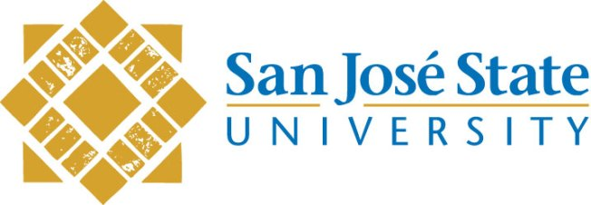

MY EDUCATION
- Master of Science in Computer Engineering, San Jose State University, Dec 2018

- I am pursuing my Master's Degree in Computer Engineering from San Jose State University,California, from Jan 2017.
I have chosen to specialize in the field of Data Science and Machine Learning.My present GPA is 3.18 on a scale of 4.
The courses that I have taken/will take are as follows:
- Object Oriented Programming & Data Structures in C++.
- Operations Systems Design.
- CPU & Computer Architecture.
- Mobile Application Development in Android & iOS.
- Bachelor of Engineering in Telecommunications Engineering, PES University, May 2015

- I completed my Engineering Degree from PES Institution of Technology(now PES University), in the year 2015.
I graduated with a GPA of 7.73 on a 10 point scale.
Activities and Societies:
- Event Organizer for University's Annual Techno-Cultural Fest named "Aatmatrisha".
- Active Participation and volunteering in Science Fest organised at PES University.